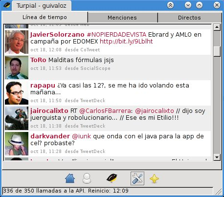

Instalación de Turpial (cliente de Twitter) en Gentoo Linux
Turpial es un proyecto que busca ser un cliente alternativo para Twitter. Está escrito en Python, tiene como meta ser una aplicación con bajo consumo de recursos y que se integre al escritorio del usuario pero sin renunciar a ninguna funcionalidad. Es software libre de origen venezolano, liberado bajo la licencia GPL 3.
1) Descargue
La última versión al escribir este artículo es la 1.3.4 y lo encontrará en:
http://code.google.com/p/turpial/
2) Desempaque
Como está hecho en Python no se requiere compilación o instalación (es opcional). Desempaque con:
$ tar xvf turpial-1.3.4.tar.gz
3) Instale las dependencias
Según el archivo README.rst se necesitan los siguientes paquetes:
python >= 2.5
python-simplejson >= 1.9.2
python-gtk2 >= 2.12
python-notify >= 0.1.1
python-pygame >= 1.7
python-pybabel >= 0.9.1
python-gtkspell >= 2.25.3
python-webkit
python-setuptools
Si usa Ubuntu o Debian lea el mismo archivo README.rst donde se detalla la instalación de los paquetes anteriores.
Para Gentoo Linux podemos asegurar que Python está instalado por defecto. Así que, como root, revisamos cuáles paquetes nos faltan con:
# emerge -pv simplejson pygtk notify-python pygame Babel gtkspell-python pywebkitgtk setuptools
Tras la revisión, en mi caso particular veo que:
- Ya tengo instalado pygtk y setuptools.
- Como uso el entorno de escritorio KDE, desactivo el soporte gstreamer solicitado por webkit-gtk (otra dependencia más) agregando -gstreamer a la variable USE en /etc/make.conf. Si usted prefiere Gnome o usa GStreamer, no lo desactive.
Reviso de nuevo...
# emerge -pv simplejson notify-python pygame Babel gtkspell-python pywebkitgtk
Ahora sí, a instalar los paquetes faltantes...
# emerge simplejson notify-python pygame Babel gtkspell-python pywebkitgtk
4) Ejecute Turpial
Cámbiese al directorio donde desempacó Turpial, en mi caso es /mnt/archivos/software/turpial/turpial-1.3.4
$ cd /mnt/archivos/software/turpial/turpial-1.3.4
Agregue el directorio actual (donde se encuentra turpial-1.3.4) a la variable de entorno PYTHONPATH. La variable de entorno $PWD lo tiene:
$ export PYTHONPATH=$PWD
Ejecute con el parámetro -i gtk para usar la interfaz GTK+
$ python turpial/main.py -i gtk
La primer ejecución involucra la autentificación con Twitter.


Para lanzar Turpial fácilmente, elabore un Bash Script con los pasos anteriores:
1 2 3 4 | |
5) Opcionalmente puede instalarlo de forma permanente
Para integrarlo en su GNU/Linux:
# python setup.py install
Un dato curioso de Turpial es que su nombre es el del ave nacional de venezuela. ¿Será por ello que el programa emite cantos de ave cuando llegan nuevos twetts?.